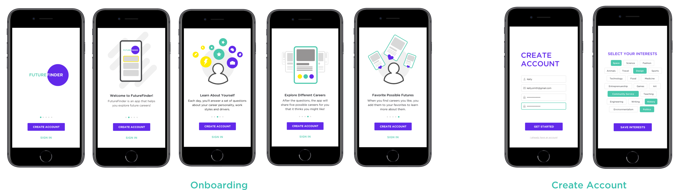
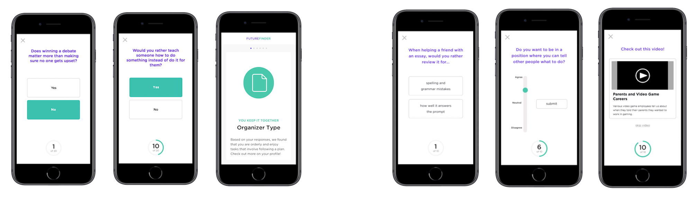
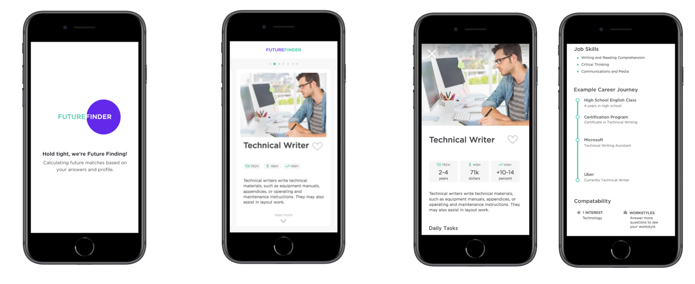
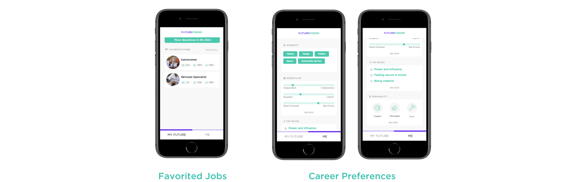

Onboarding
Prior to creating an account, onboarding allows students to gain a better understanding of the system and their goal in using it. Creating an account involves students creating a login so their information can be stored and so they can come back to the app day to day. As part of account creation, students input interests to give the system a base understanding of their preferences.
Questions
After account creation, students answer twenty personality questions. Based on their answers, they receive one of six personality types from Holland’s RIASEC model. Each day after that, students answer a daily set of ten questions that assess their interests, workstyles, and drives. Questions include multiple choice and likert scale rankings for variety in response-type. Each question set also includes a video for students to evaluate.
Daily Jobs
After each set of questions, the system pulls five jobs based on the information it knows about the student. Students can expand cards to see more detail, but are initially only shown a summary to mitigate content overload and avoid an intimidating flood of information at once.
Profile
The profile contains two sections: “Futures” and “Me.” “Futures” allows students to access daily questions or see how much time remains until more questions are available. Favorited jobs can also be viewed on this page. “Me” is where students view their interests, workstyles, drives, and personality. This information updates as a student continues to use the application.